LAURA DÍAZ · COLECCIÓN NOVIA
El inicio de
una historia
inolvidable.
Vestidos que acompañan lo que eres,
en el día que siempre recordarás.
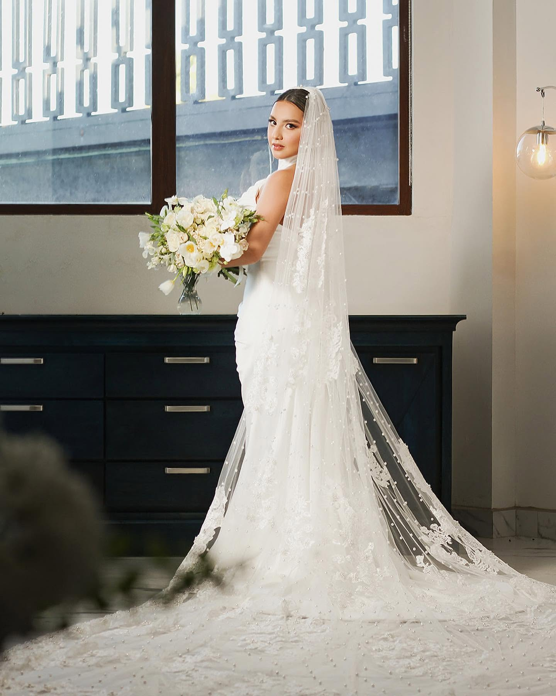
01 — NOVIA
La belleza de un sí.
Siluetas que enamoran.
Detalles que permanecen.
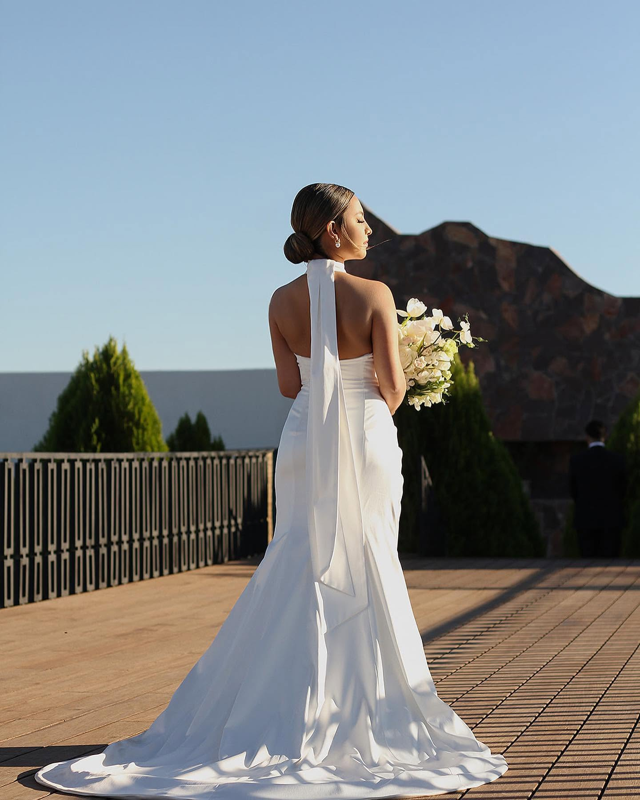
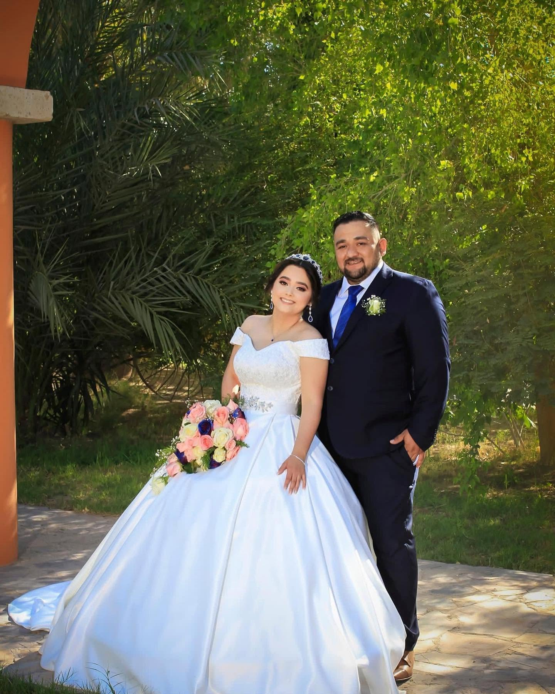
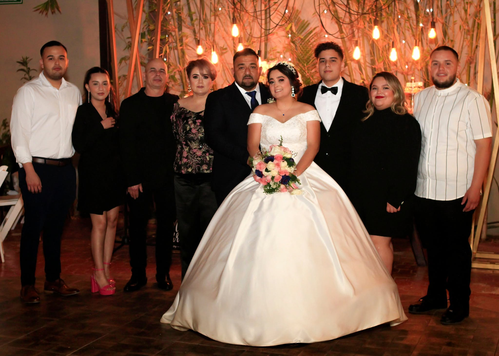
02 — NOCHE & CASUAL
Tu esencia.
Tu manera de brillar.
Vestidos de noche y casuales.
Para hacer tuyo cada momento.
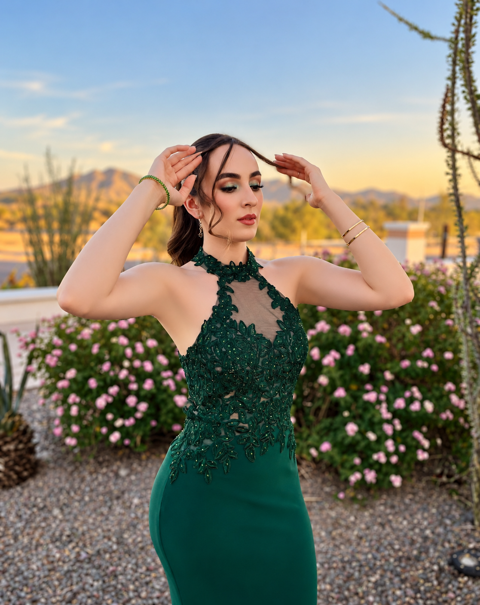
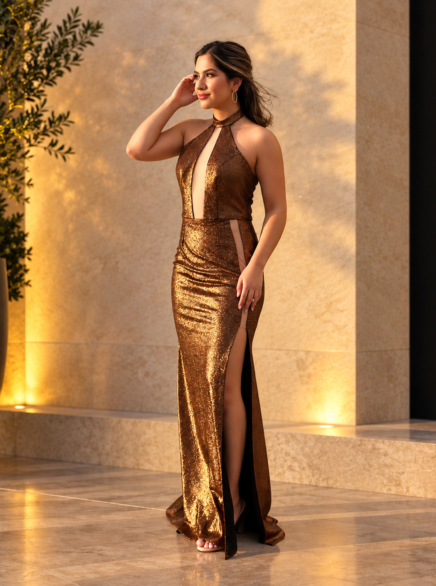
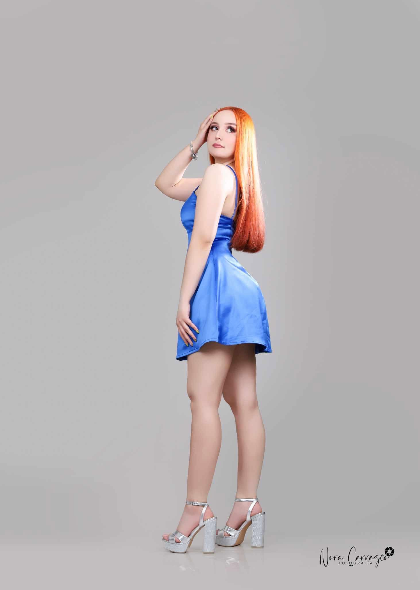
03 — KIDS
Pequeños momentos.
Grandes recuerdos.
Color, ternura y personalidad
desde las primeras historias.
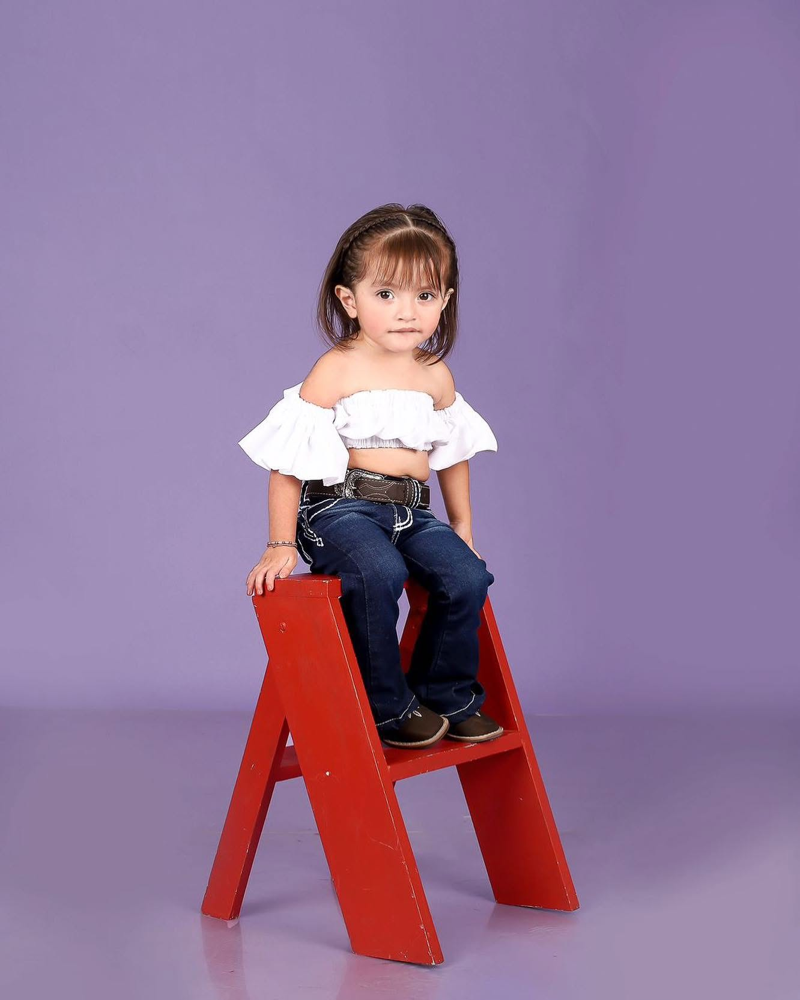
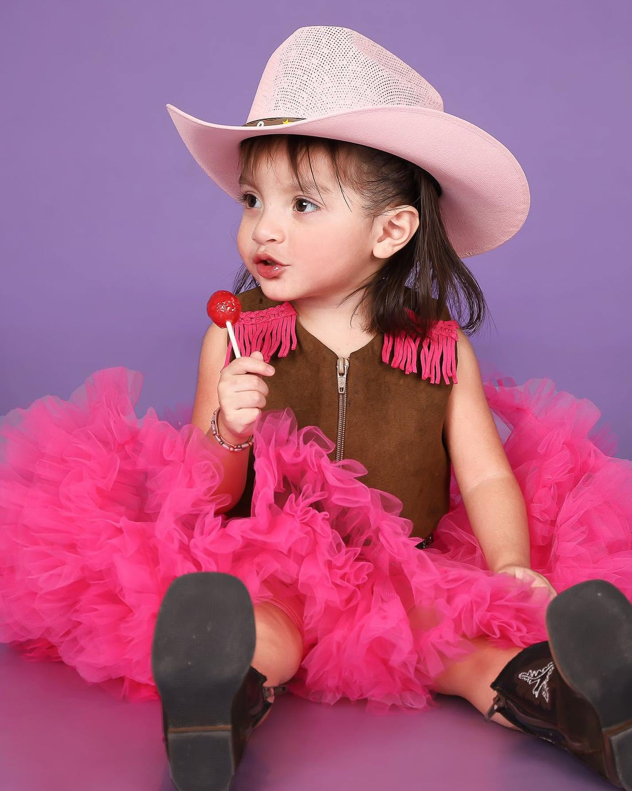
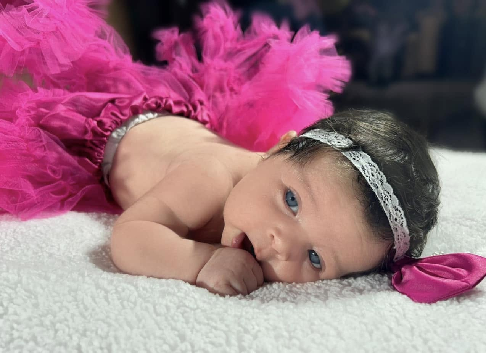
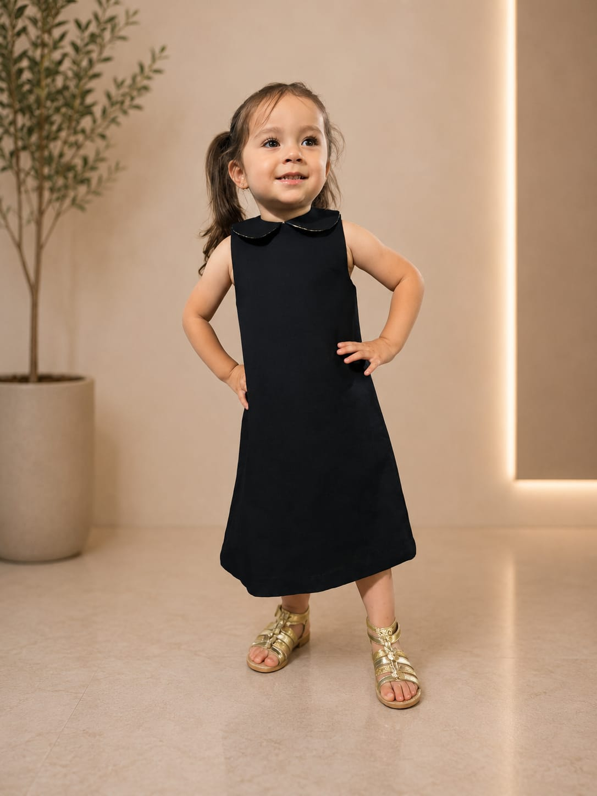
04 — BIKINIS DE COMPETENCIA
Diseñados para
destacar.
Fuerza, presencia y brillo.
El diseño también sube al escenario.
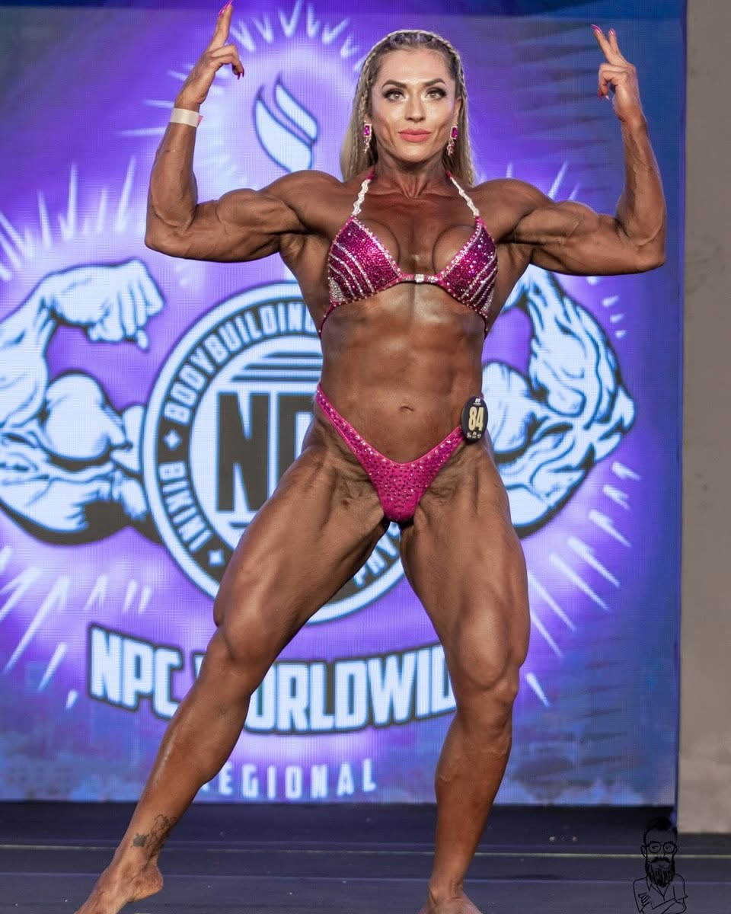
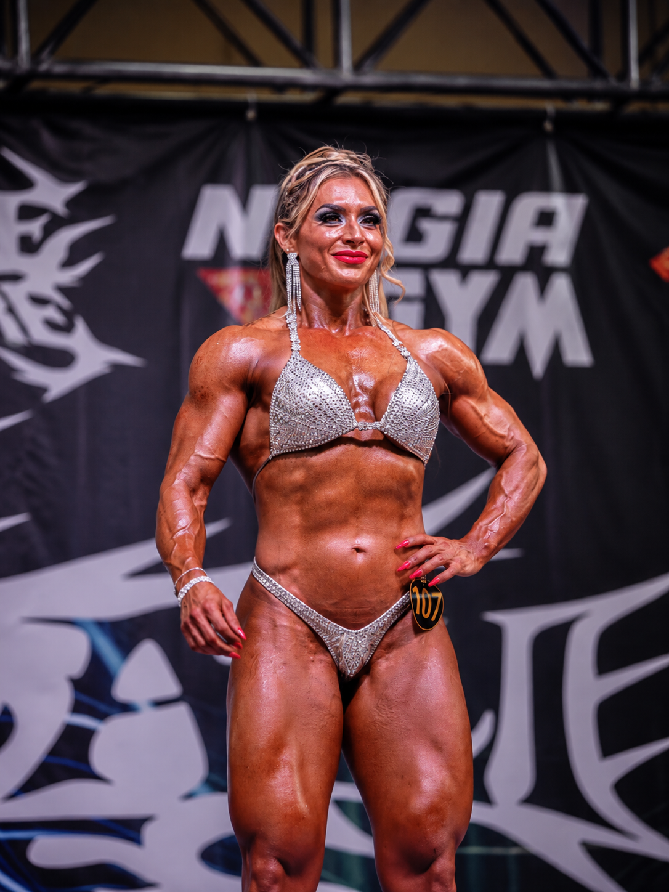
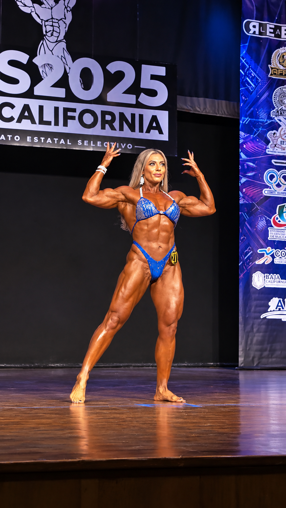